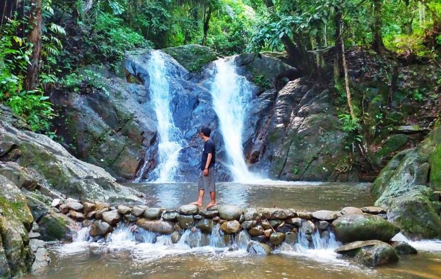

Tak jauh dari lokasi air terjun Latuppa, Anda bisa menemukan sungai Latuppa yang tentu saja tak kalah indahnya. Air sungainya berasal dari air terjun Latuppa, yang kemudian mengalur indah nan berkelok kelok sepanjang 12 kilometer. Cobalah untuk sedikit menyusurinya, siapa tau Anda bisa menemukan beberapa spot terbaik untuk diabadikan yang salah satunya diberi nama sungai jodoh.
Selain menikmati deburan airnya yang jatuh dari ketinggian, cobalah untuk menikmati kesegaran airnya dengan berenang di sepanjang sungai Latuppa. Selain menyegarkan, air yang langsung turun dari ketinggian ini tampak jernih tampak menggoda para pengunjung untuk berenang. Oleh sebab itu, ada baiknya untuk membawa baju tambahan agar tidak kedinginan selama perjalanan ke rumah.
 Puas bermain air dan menikmati alam ciptaan Tuhan, jangan lupa untuk mengabadikan momen berlibur di smartphone kesayangan. Dijamin hasil foto akan terlohat ciamik, dengan air terjun cantik sebagai latar belakangnya. Cobalah menantang diri untuk menemukan spot terbaik, agar hasil jepretan menjadi lebih cantik. Dijamin aktifitas ini tidak akan pernah membuat pengunjung bosan mengunjungi detinasi wisata satu ini.